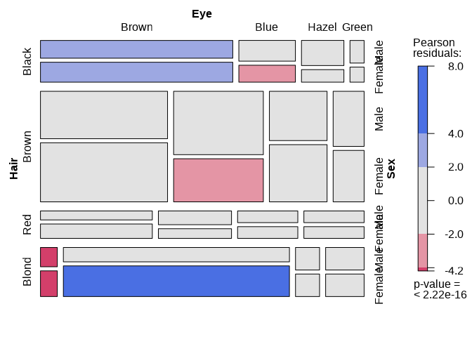
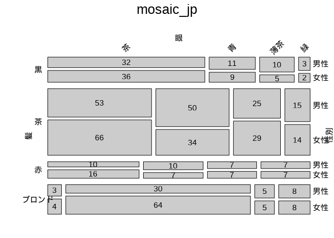

このPackageは、vcdが提供するmosaic などのグラフ生成ツールで日本語を使えるようにするものです。
カテゴリカルデータの可視化には、Michael Friendly先生たちのvcd（その名もずばり、Visualizing of Categorical Data：カテゴリカルデータの可視化）が有効なことはいろいろなところでこのパッケージが紹介されていることからもわかります。ただ、グラフィックがbase graphics ではなく、（latticeやggplot2でも使われている）gridであることもあり、日本語表示が簡単ではありませんでした。
しかし、gpar に日本語フォントを指定することでmosaicなどのvcd function で日本語がつかえるようになります。
grid graphics であるvcdで日本語を使うには、package showtextをインストールし、library(showtext)ののり、showtext_auto(TRUE)を設定すればOKです。ggplot2 でも有効です。
こうした経緯があるために、以前、以下のように書いてましたが、
「当初は、一々mosaic()の中にパラメータで書いていたのですが、さすがに面倒になったので、wrapper をパッケージにしてみました。」
showtextを使えば日本語（以外もOK）表示のために、いちいちgparを指定しなくてもいいので、このwraperは、mosaiの使い方の説明になりました。
Github からインストールできますので、使ってみてください。
Installation
githubから以下のようにしてインストールできます：
if (!require(devtools)){
install.packages('devtools')
library(devtools)
}
devtools::install_github("419kfj/futools")Example
This is a basic example which shows you how to solve a common problem:
library(vcd)
showtext_auto(TRUE)
# data set
data(HairEyeColor_jp)
mosaic(HairEyeColor,shade = TRUE)
# plain mosaic_jp
mosaic_jp(HairEyeColor_jp)
# without cell color
mosaic_jp2(HairEyeColor_jp)
# set cell color by color matrix
cset <- t(matrix(rep(brewer.pal(4,"Blues"),2),ncol=2))
mosaic_jp2(HairEyeColor_jp,gp=gpar(fill=cset,col=0))
# Pearson residulas
mosaic_jp2(HairEyeColor_jp,shade=TRUE)参考文献
- 藤本一男,2017, 「二つのmosaic plotと日本語表示」★日本語表示の箇所は↑で読み替えてください。 https://www.slideshare.net/kazuofujimoto/2mosaic-plot-80084536
- 藤本一男,2017, 「vcd/vcdExtra で日本語を使う その2」 https://www.slideshare.net/kazuofujimoto/use-japanese-with-vcdvcdextra-package
- David Meyer, Achim Zeileis, Kurt Hornik , 2007, The Strucplot Framework: Visualizing Multi-way Contingency Tables with vcd, Journal of Statistical Software,Vol17, https://www.jstatsoft.org/index.php/jss/article/view/v017i03/v17i03.pdf
- Michael Friendly,2017, Working with categorical data with R and the vcd and vcdExtra packages,
- Zach Bogart, Joyce Robbins,2019, “GR5702 Exploratory Data Analysis and Visualization course offered at Columbia University.”,https://jtr13.github.io/EDAVold/mosaic.html